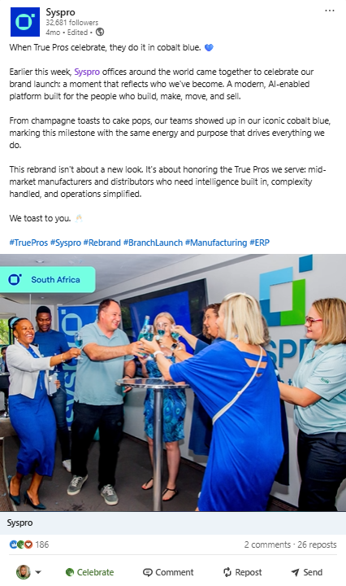
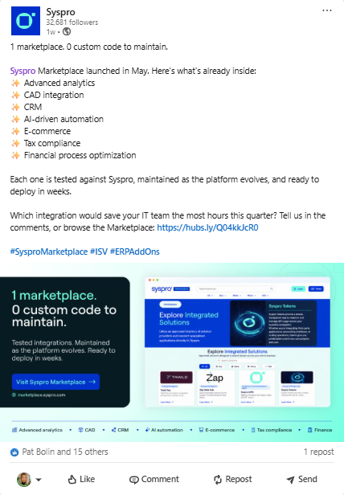
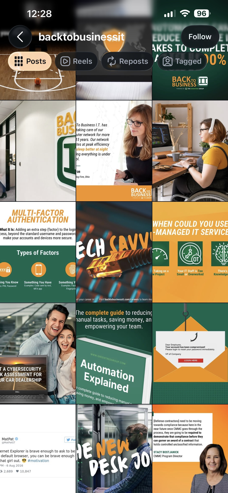
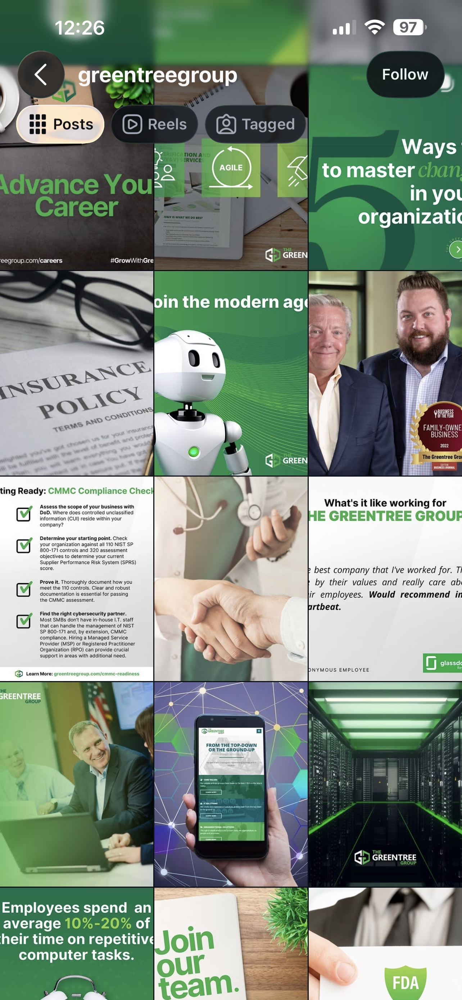

Social media is more than a publishing schedule. Done well, it builds credibility, strengthens brand perception, and supports broader business goals.
Throughout my career, I've developed social strategies that align with integrated marketing campaigns, amplify thought leadership, support product launches, and create a more consistent brand experience across channels. Whether leading global governance or managing day-to-day content, I always start with one question: what is this content supposed to do for the business?
Created the first structured global organic social governance model for The Greentree Group and its brand of service, Back To Business I.T., to bring consistency, strategy, and measurable outcomes to regional social execution.
Established The Greentree Group’s first structured, scalable approach to global organic social, aligning content planning, campaign execution, and regional teams to create a more strategic and consistent brand presence worldwide.
Align social content with demand generation campaigns, product launches, and customer marketing initiatives to amplify reach and drive pipeline.
Social content consistently aligned to campaign objectives, supporting broader demand generation and brand awareness goals across the Americas region.
Support product launches, brand awareness, and customer engagement across automotive technology brands through social media content and campaign support.
Contributed to brand awareness, customer engagement, and product visibility across multiple automotive technology brands and business units.
Every post below started with a goal. Here's what end-to-end social execution looks like: copy, design, and strategy all in one.

social-syspro-rebrand.jpgRebrand Launch · Brand Celebration

social-syspro-marketplace.jpgSyspro Marketplace · Thought Leadership
NAM Executive Edge · Event Sponsorship

social-btbit-grid.jpg@backtobusinessit · Built from scratch

social-gtg-grid.jpg@greentreegroup · Content strategy & design
The projects I enjoy most usually begin with someone saying, “We’ve never done this before.”
If you’re building a marketing function that needs to move fast and prove impact, let’s talk.